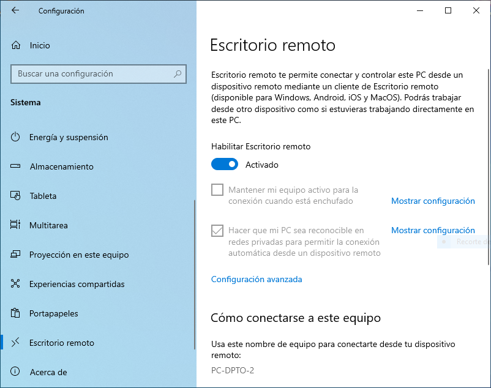
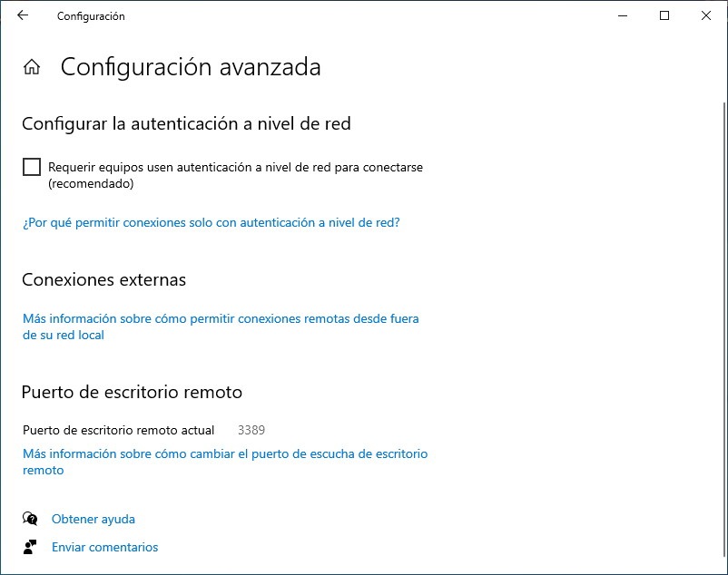
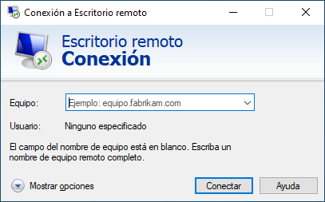

1. Administración remota¶
Los servicios de administración remota permiten el acceso y manipulación de un equipo desde otro situado en la misma o distinta red. Exigen la autenticación del usuario remoto, por lo que es fundamental que la comunicación sea segura.
Hay, fundamentalmente, dos tipos de servicios:
Los servicios gráficos que permiten acceder a sistemas con entorno de escritorio.
Los servicios de terminal de texto que permiten acceder al entorno de la shell de un servidor remoto.
1.1. Servicios gráficos¶
Nos centraremos en tres:
Remote Desktop Protocol, que es el protocolo que traen incorporados los Windows modernos para su administración remota.
VNC, que se basa en el protocolo RFB y tiene versiones para múltiples sistemas operativos tanto como servidor como cliente.
TeamViewer, que también funciona en múltiples sistemas operativos y está enfocado al soporte técnico: facilita que un técnico pueda acceder al ordenador de un cliente a fin de resolverle algún problema.
1.1.1. Remote Desktop Protocol (RDP)¶
Permite gestionar de manera remota un sistema Windows desde cualquier sistema (gracias a que existe FreeRDP, aunque existen otras implementaciones libres). Las claves para su uso son las siguientes:
Servidor
Se puede acceder a su configuración a través de Configuración>Sistema>Escritorio remoto, aunque en la búsqueda basta con escribir «remoto» para que una de las opciones sea «Configuración del escritorio remoto». Por defecto, está deshabilitado, de modo que habrá que habilitarlo:
Nota
Con clientes antiguos (como rdesktop de Linux), necesitaremos deshabilitar en la configuración avanzada la autenticación a nivel de red:
Cliente
En Windows el cliente es muy fácil de usar. Basta con ejecutar mstsc.exe al que se puede acceder sin recordar el nombre simplemente con escribir en la búsqueda «remoto» y escoger la opción de «Conexión a Escritorio remoto»:
Linux tiene varios clientes competentes: freerdp (freerdp3-x11) o remmina, que sirve también sirve como cliente VNC. El veterano rdesktop no soporta la autenticación de las últimas versiones del protocolo.
1.1.2. VNC¶
Permite la gestión remota de múltiples sistemas desde un cliente que puede correr también en múltiples sistemas. Como para la gestión de un Windows es mejor utilizar su solución nativa (RDP), reservaremos esta posibilidad para la gestión remota de un Linux.
Servidor
Podemos usar TigerVNC. Si lo usamos, la mejor alternativa es utilizarlo como un módulo de Xorg, para lo cual:
Instalamos:
# apt install tigervnc-xorg-extension
Se crea el archivo de configuración para la carga del módulo[1]:
# /etc/X11/xorg.conf.d/10-tigervnc.conf Section "Module" Load "vnc" EndSection Section "Screen" Identifier "Screen0" # Sin autenticación #Option "SecurityTypes" "VeNCrypt,TLSNone" # Autenticación mediante contraseña Option "SecurityTypes" "VeNCrypt,TLSVnc" Option "PasswordFile" "/etc/tigervnc/vncpasswd" # Autenticación mediante usuario/contraseña local #Option "SecurityTypes" "VeNCrypt,TLSPlain" Option "PAMService" "tigervnc" Option "PlainUsers" "usuario,otrousuario" # Autenticación mediante contraseña. El servidor se identifica #Option "SecurityTypes" "VeNCrypt,X509Vnc" Option "X509Cert" "/etc/tigervnc/tigervnc.pem" Option "X509Key" "/etc/tigervnc/tigervnc.key" EndSection
El archivo anterior presenta cuatro alternativas:
La primera (deshabilitada) permite el acceso al servidor sin contraseña, lo cual no es nada recomendable.
La segunda (que es la que está habilitada) exige la autenticación mediante una contraseña almacenada en un archivo. Si preferimos esta opción, necesitaremos crear la contraseña dentro de tal archivo con la orden:
# vncpasswd /etc/tigervnc/vncpasswd
La tercera (deshabilitada también) permite la autenticación usando las credenciales de un usuario del sistema. Mediante la opción PlainUsers definimos la lista de usuarios válidos.
La cuarta es como la segunda (así que necesita definirse también «PasswordFile»), pero añade la identificación del servidor mediante certificado digital. Ello exige, al menos, la creación de un certificado autofirmado:
# cd /etc/tigervnc # openssl req -config openssl.cnf -newkey ec:openssl-ecparams.pem \ -x509 -days 3650 -nodes -keyout tigervnc.key -out tigervnc.pem
Advertencia
En sistemas con poca entropía la generación del certificado fallará. Puede solucionarse cambiando antes el valor de RANDFILE en
/etc/tigervnc/openssl.cnf:RANDFILE = /tmp/randfiley creando y rellenando ese archivo con caracteres al azar:
# dd < /dev/urandom > /tmp/randfile bs=256 count=1
Para utilizar cualquier otra alternativa, basta con comentar/descomentar las líneas correspondientes que definen el tipo de seguridad.
Reiniciamos el servidor gráfico para que se haga efectiva la carga del módulo:
# pkill -1 X
Una vez de regreso, comprobamos que el servidor escucha en el puerto 5900:
$ ss -4ltn State Recv-Q Send-Q Local Address:Port Peer Address:Port Process LISTEN 0 5 0.0.0.0:5900 0.0.0.0:*
Si quieren explorarse otros tipos de seguridad, puede tomar como guía esta tabla:
Seguridad |
Cifrado |
Autenticidad del servidor[2] |
Autenticación |
|
|---|---|---|---|---|
None |
No |
No |
Ninguna |
|
VncAuth |
No |
No |
Con contraseña |
|
Plain |
No |
No |
Con usuario/contraseña |
|
VeNCrypt |
TLSNone |
Sí |
No |
Ninguna |
TLSVnc |
Sí |
No |
Con contraseña |
|
TLSPlain |
Sí |
No |
Con usuario/contraseña |
|
X509None |
Sí |
Sí |
Ninguna |
|
X509Vnc |
Sí |
Sí |
Con contraseña |
|
X509Plain |
Sí |
Sí |
Con usuario/contraseña |
|
El protocolo VNC original es inseguro y para asegurarlo se puede tunelizar con SSH o con SSL, o utilizar una VPN. Sin embargo, se han creado posteriormente extensiones que le añaden funcionalidades. Una de ellas es «VeNCrypt», que le añade cifrado SSL, y que se usa en nuestra configuración propuesta en todas las alternativas. Por tanto, las comunicaciones entre cliente y servidor estarán cifradas.
Obsérvese, además, que en todas las propuestas de nuestra configuración del servidor se habilita un único tipo de seguridad lo cual obliga al cliente a soportarla. Es posible habilitar varias enumerándolas por orden de preferencia:
Option "SecurityTypes" "VeNCrypt,TLSPlain,VeNCrypt,TLSVnc,VncAuth"
lo cual significa que si el cliente soporta las tres, se dará preferencia a la conexión cifrada con autenticación mediante usuario/contraseña; si no soporta la primera, entonces la conexión será cifrada, pero la autenticación con contraseña; y, si finalmente, el cliente no soporta cifrado, no se cifrará y la autenticación se hará con contraseña.
Advertencia
Permitir que la conexión no sea cifrada nos asegura compatibilidad, ya que un cliente puede no haber implementado el cifrado TLS. Sin embargo, provoca una grave amenaza en la seguridad al permitir la monitorización de la comunicación. Posiblemente sea más prudente obligar al cliente a no usar cualquier programa.
Nota
En la definición de «SecurityTypes» es posible ahorrarse la declaración de VeNCrypt y escribir directamente el subtipo. Por tanto, la última definición podría haber sido, simplemente:
Option "SecurityTypes" "TLSPlain,TLSVnc,VncAuth"
Cliente
Existen muchas alternativas:
En Linux Vinagre, Remmina (válida también para RDP) o el cliente de TigerVNC, disponible a través del paquete tigervnc-viewer que instala el ejecutable vncviewer).
En Windows, el mismo cliente de TigerVNC (descargue de su página el cliente vncviewer64).
En todos estos clientes, para conectar con el servidor, basta con indicar su IP (o nombre) y, en caso de que escuche en el puerto 5900 se deberá indicar también éste. Ahora bien, no se expresa directamente el número de puerto, sino el número de display que se obtiene al sustraer 5900 del número de puerto. Por tanto, un servidor escuchando en el puerto 5900, escuchará en el display 0; uno en el puerto 5901, en el display 1; y así sucesivamente. Por ejemplo, si el servidor se encuentra en la dirección 172.22.9.111 y escucha en el display 0, deberemos conectar a él mediante 172.22.9.111:0.
1.1.3. TeamViewer¶
1.2. Servicios de terminal de texto¶
Dos son los servicios de administración remota para línea de comandos:
Telnet, ya totalmente en desuso por ser inseguro y, aunque puede asegurarse mediante SSL/TLS, por carecer de todas las características adicionales de su alternativa (transferencia de archivos, autenticación mediante claves asimétricas, tunelización de conexiones).
SSH que es profusamente desarrollado en el manual. De lo referido en él nos interesa para el curso:
La utilización de sus dos clientes principales:
El cliente de openssh, usado fundamentalmente en entornos UNIX.
Putty, ampliamente usado en entornos Windows (aunque su Powershell incluye el cliente de openssh.
La autenticación con claves, aunque podemos limitarla a claves y que la autenticación con certificado quede para el módulo de Seguridad Informática.
Notas al pie